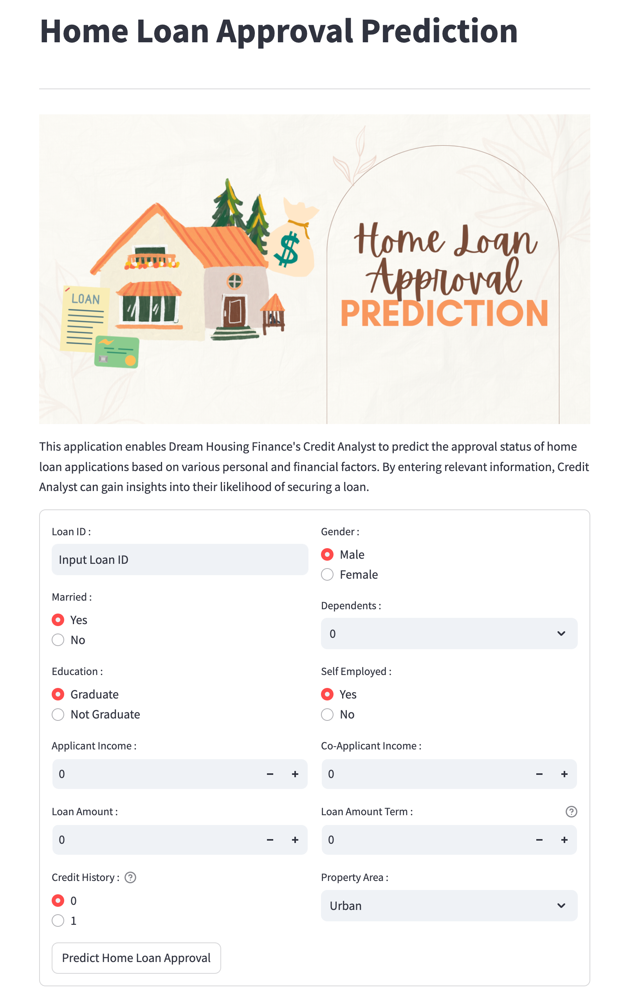

Introduction
Dream Housing Finance, a leader in home loan services, aims to address the common challenges faced during the loan approval process, which can take 18 to 40 days and cause significant stress among applicants. This project seeks to create a predictive model for fast-tracking loan approvals to improve customer satisfaction.
Data Overview
The dataset, sourced from Kaggle, includes 12 features related to applicants' personal and financial details, crucial for assessing loan eligibility. The target variable is Loan_Status, indicating approval ('Y') or rejection ('N').
The dataset contains a total of 12 features categorized into 8 categorical features and 4 numerical features. The target variable for prediction is Loan_Status, which indicates whether a loan is approved (Y) or rejected (N).
Methodology
Data Loading and Inspection
Loading the dataset and reviewing its structure, data types, and missing values.
Exploratory Data Analysis (EDA)
Identifying key patterns, correlations, and insights through visual analysis.
Feature Engineering
Transforming data, handling missing values, and preparing features for modeling.
Model Building
Training machine learning models like KNN, SVM, Decision Tree, Random Forest, and XGBoost.
Model Evaluation
Assessing model performance using metrics, focusing on the F1-score for balanced accuracy.
Model Optimization
Hyperparameter tuning the model to improve performance and reduce variability.
Machine Learning Models Employed
K-Nearest Neighbours (KNN)
KNN is a simple, yet powerful algorithm used for classification by comparing the distance between data points.
Support Vector Machine (SVM)
SVM is effective in high-dimensional spaces, ideal for binary classification tasks like loan approval prediction.
Decision Tree
Decision Trees split data into subsets based on feature values, making them interpretable and suitable for classification problems.
Random Forest
Random Forest aggregates multiple decision trees to reduce overfitting and improve model robustness.
XGBoost
XGBoost is a gradient boosting framework that optimizes model performance through advanced boosting techniques.
Model Analysis
Strength
Evaluating the model's ability to accurately predict the target variable.
Weakness
Identifying model limitations, such as underfitting or overfitting.
Improvement
Implementing techniques to enhance model performance, such as hyperparameter tuning.
Conclusion
The developed model demonstrates reliable performance for expediting loan approvals, aligning with the objective of enhancing customer experience. Future improvements could focus on optimizing hyperparameters and expanding the training data for better generalization.
Model Deployment
Interact with the deployed model here:
Home Loan Prediction Model on Hugging Face
Libraries and Tools


GitHub Repository
Access the complete code and documentation for the Home Loan Prediction project on GitHub:
Visit GitHub Repository